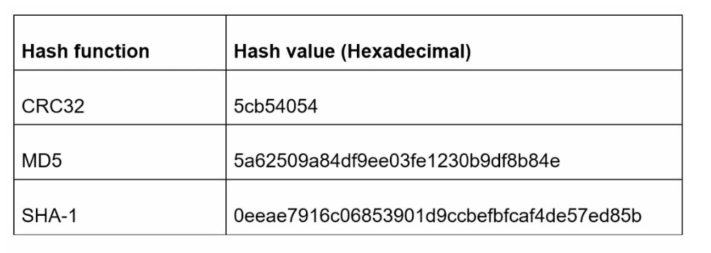
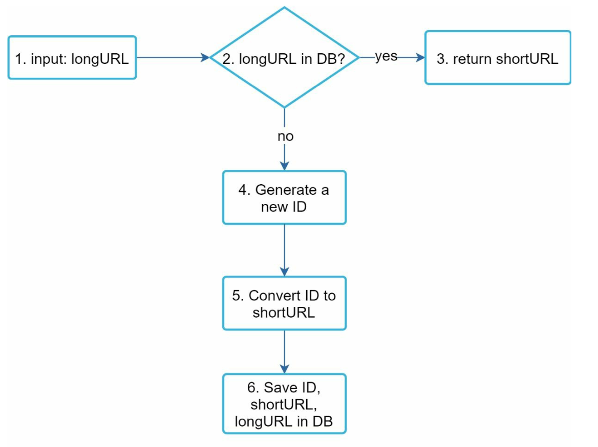

第 8 章：设计一个 URL 短链服务
原章节：Design a URL Shortener · 原项目路径
08. URL Shortener/
本章导读
https://www.example.com/2024/03/15/blog/how-to-design-a-url-shortener.html?utm_source=twitter&utm_medium=social —— 这条链接有 118 个字符。发到微博上占位置，发到短信里会被截断，印在海报上没人愿意手打。
短链服务做的事看起来极其简单：把长链接换成 https://tinyurl.com/zn9edcu。但当你被要求"每天生成 1 亿条短链、保存 10 年"时，几个真正的难题就冒出来了：
- 7 个字符到底能装下多少个链接？够用吗？
- 两条不同的长链接，生成的短码撞车了怎么办？
- 用 301 还是 302？这个选择看起来无所谓，其实决定了你能不 能做点击统计。
- 短链天生会隐藏真实目标——这正好是钓鱼攻击最喜欢的特性。你怎么防？
学完这一章，你应该能回答这些问题，并且能独立完成一次完整的容量估算。
你将学到
- 短链服务的完整需求，以及如何把需求换算成具体的存储量和 QPS
- 两套短码生成方案：Base 62 进制转换 vs 哈希 + 冲突解决
- 62 的 7 次方到底等于多少，以及为什么 6 个字符不够用
- 哈希碰撞的三种处理手段：布隆过滤器预检、唯一索引兜底、冲突后重试
- 301 与 302 重定向的完整取舍（这是原笔记讲得最不充分的地方）
- 如何防止短链被用于钓鱼和恶意跳转
- 缓存、限流、分片在高读写比场景下的配合方式
1. 问题背景与需求
「URL 短链服务（URL Shortener）」 的核心功能只有两件事：
- 缩短：给一个长 URL，返回一个短 URL。
- 重定向：用户访问短 URL，跳转到原始的长 URL。
听起来是个玩具项目。但一旦加上规模约束，它就变成了一个非常典型的系统设计题——读远多于写、需要低延迟、需要唯一性保证、需要长期存储。这些特征组合起来，正好能覆盖系统设计面试的大部分考点。
需求
| 需求 | 数值 |
|---|---|
| 短链必须唯一 | 同一个短码不能对应两个长链接 |
| 短链尽可能短 | 越短越好用 |
| 写入量 | 每天生成 1 亿条短链 |
| 服务年限 | 10 年 |
| 读写比 | 读 : 写 = 10 : 1 |
| 总记录数 | 3650 亿条 |
| 总存储 | 约 365 TB |
这些数字是怎么来的（自己算一遍）
① 10 年总共生成多少条短链？
1 亿条/天 × 365 天/年 × 10 年 = 3,650 亿条 = 365,000,000,000 条
② 需要多少存储？
原笔记给出 365 TB。反推一下：365 TB ÷ 3650 亿条 = 1000 字节/条，也就是每条记录约 1 KB。
这个假设是合理的——一条记录包含 id（8 字节）、shortURL（7 个字符，约 7~10 字节）、longURL（平均 100~200 字节），再加上索引、行开销和存储引擎的额外占用，1 KB 是个稳妥的估算。
③ 平均 QPS 是多少？
写 QPS = 1 亿 ÷ 86,400 秒 ≈ 1,157
读 QPS = 1,157 × 10 ≈ 11,574
总 QPS ≈ 12,731
④ 峰值 QPS？
按经验，峰值通常是平均值的 2~3 倍（互联网流量有明显的日内波动）。所以：
峰值写 QPS ≈ 3,500
峰值读 QPS ≈ 35,000
这两个数字（约 1 万和 3 万）是本章所有架构决策的出发点。 记住它们：它们决定了你需要多少台 Web 服务器、多大的缓存、几个数据库分片。
注意读写比是 10:1，但读 QPS 绝对值也不算特别高（3.5 万）。 这意味着一个设计良好的缓存层（比如 Redis）基本能扛住绝大部分读流量，数据库的压力主要来自写入和缓存未命中。
2. 第一步：高层设计
2.1 API 设计
短链服务只需要两个接口：
① 创建短链
POST /api/v1/data/shorten
请求体：{ "longUrl": "https://www.example.com/very/long/path" }
响应体：{ "shortUrl": "https://short.ly/zn9edcu" }
② 访问短链（重定向）
GET /api/v1/{shortUrl}
响应：HTTP 301 或 302，Location 头指向原始长链接
注意第二个接口的返回值。 它不返回 JSON，而是返回一个重定向响应。这是 REST API 中比较少见的形态，但对短链服务来说是天经地义的——用户的浏览器拿到
Location头就会自动跳转。

2.2 重定向：301 还是 302
这是一个看起来无关紧要、实际上影响很大的选择。
| 301 Moved Permanently | 302 Found | |
|---|---|---|
| 语义 | 永久重定向 | 临时重定向 |
| 浏览器行为 | 会缓存。下次访问同一个短链，浏览器直接跳到长链接，不再请求短链服务 | 不缓存。每次点击都要回短链服务 |
| 服务器压力 | 小（大量请求被浏览器缓存挡掉了） | 大（每次点击都要处理） |
| 点击统计 | 无法统计（请求根本没到服务器） | 可以完整统计（每次点击都经过服务器） |
| 能否改目标 | 不能。用户浏览器里缓存的 301 会一直生效，即使你在数据库里改了映射 | 可以。每次都来问服务器，改了立刻生效 |
| 能否撤销恶意链接 | 不能（同上） | 可以 |
原笔记提到了 301 的缓存特性和 302 的统计能力，但没有把代价讲透。 完整的权衡是这样的：
选 301 意味着：
- 服务器压力小、用户体验略快（少一次往返）。
- 代价是彻底放弃点击分析能力。而点击分析恰恰是短链服务最有商业价值的部分——"这条链接被点了多少次、从哪个渠道来的、什么时间段最活跃"，这些数据是做营销投放决策的依据。
- 更严重的代价是不可撤销。如果你的服务被用来生成指向钓鱼网站的短链，你无法通过修改数据库来止损——已经缓存了 301 的用户浏览器会继续跳到恶意网站。
选 302 意味着：
- 每次点击都经过你的服务器，统计、风控、A/B 测试、目标变更、链接撤销全部可行。
- 代价是服务器压力大（但可以通过缓存和水平扩展解决）、多一次网络往返。
工业界的实际选择：几乎所有商业短链服务都使用 302（或 307），因为它们要靠点击数据做产品。TinyURL、Bitly、微博短链、微信短链都是如此。
什么时候可以用 301？ 如果你做的是纯内部工具（比如公司内网的链接转发），完全不需要统计，且目标是固定的，那 301 更省资源。
一个更严格的细节：HTTP 规范说 302 默认不可缓存，但部分浏览器和代理仍可能缓存它。如果你要确保每次点击都到服务器，应该用 307 Temporary Redirect（语义更明确）并显式加上
Cache-Control: no-store响应头。
2.3 短链生成：需要一个好的哈希函数
短链生成的核心是把长 URL 映射成一个短的标识符。原笔记把它叫做"哈希函数"，并给出两个要求：
- 每个长 URL 必须映射到唯一的一个短码。
- 每个短码必须能反查回长 URL。

严格来说，第 1 条要求需要修正。 "每个长 URL 映射到唯一短码"是函数的定义（同一输入必然得到同一输出），这个没问题。但真正的唯一性要求是反过来的：每个短码只能对应一个长 URL。
这两者的区别很关键：
- 如果同一个长 URL 每次生成的短码不同（比如用随机数），那是允许的——只是浪费存储。
- 如果两个不同的长 URL 生成了同一个短码，那就是碰撞（Collision），会导致跳转错误，绝对不能接受。
所以约束是：短码 → 长 URL 必须是一对一的。
3. 第二步：深挖设计
3.1 数据模型
最直观的方案是用关系型数据库存一张映射表：

| 列名 | 类型 | 说明 |
|---|---|---|
id |
BIGINT 主键 |
自增或分布式生成的唯一 ID |
shortURL |
VARCHAR(7) |
短码，加唯一索引 |
longURL |
VARCHAR(2048) |
原始长链接 |
为什么用关系型数据库？ 因为短链服务的数据是高度结构化的（就是三列的映射关系），而且需要强唯一性约束（shortURL 上的唯一索引是碰撞检测的最后一道防线）。这些正是关系型数据库最擅长的事。
数据量太大怎么办？ 3650 亿条记录，单库肯定放不下。解决方案是分片（Sharding）：
- 按
id范围分片，或按hash(id) % 分片数分片。 - 分片键选
id还是shortURL？如果选shortURL，需要先把短码转回id才能定位分片，多一步；直接按id分片更简单。 - 推荐做法：用一个独立的「ID 生成器」（见第 7 章）来产生全局唯一的
id，然后id % 分片数决定这条记录落在哪个分片。这样分片规则简单且均匀。
3.2 方案一：Base 62 编码
「Base 62 编码（Base 62 Conversion）」 是短链服务最常用的方案。它的思路是：先给每个长链接分配一个唯一的十进制数字 ID，再把这个数字用 62 进制表示出来。
为什么是 62？ 因为可用字符集是：
0-9 （10 个） + a-z（26 个） + A-Z（26 个） = 62 个字符
62 个字符意味着每一位能表达 62 种可能，比十六进制（16）和十进制（10）都紧凑得多。
编码示例：把 ID 2009215674938 转成 Base 62：
2009215674938 → zn9edcu
我实际验算过这个例子，原笔记的答案是正确 的。 验算过程（从右往左逐位取余）：
步骤 被除数 ÷62 后的商 余数 余数对应的字符 1 2009215674938 32406704434 30 u2 32406704434 522688781 12 c3 522688781 8428851 59 d（索引 13 → 字符d）4 8428851 135949 3 e（索引 14）5 135949 2192 9 96 2192 35 22 n（索引 23）7 35 0 35 z（索引 35）倒过来读余数就是
zn9edcu。原笔记正确。
7 个字符到底能表示多少 URL？（关键验算）
原笔记说"7 个字符支持约 3.5 万亿个 URL"。我们来算：
62^1 = 62
62^2 = 3,844
62^3 = 238,328
62^4 = 14,776,336
62^5 = 916,132,832
62^6 = 56,800,235,584 ≈ 568 亿
62^7 = 3,521,614,606,208 ≈ 3.52 万亿
62^7 = 3,521,614,606,208 ≈ 3.52 万亿 —— 原笔记说的"3.5 trillion"是正确的。
那够用吗？ 需求是 3650 亿条：
3.52 万亿 ÷ 3650 亿 ≈ 9.65 倍
有约 9.6 倍的余量，足够。
如果只用 6 个字符呢？
62^6 = 56,800,235,584 ≈ 568 亿
568 亿 小于 3650 亿——6 个字符不够用，必须用 7 个。 这就是"7 位"这个数字的来源。
7 位短码能撑多少年？ 按每天 1 亿条的速度：
3,521,614,606,208 ÷ 100,000,000 = 35,216 天 ≈ 96.4 年
约 96 年。 所以 7 位短码有充足的安全边际。
一个实用的工程技巧
如果 id 从 1 开始自增，那么：
id = 1→ 短码1（1 个字符）id = 62→ 短码10（2 个字符）- ...
短码长度会随着 ID 增长而不固定。 这本身没问题（原笔记也提到了这一点），但如果你希望所有短码都是固定的 7 位，可以让 ID 从 62^6 = 56,800,235,584 开始分配。这样从第一条记录起就是 7 位。
原笔记把"长度不固定"列为 Base 62 方案的一个特点。 这确实是个特点，但不是缺点——短码短一点反而更好（更省空间、更易读）。真正需要固定长度的情况是出于产品一致性考虑。
3.3 方案二：哈希 + 冲突解决
另一条路线是对长 URL 本身做哈希，取哈希值的前几位作为短码。

常用哈希算法：CRC32（快但空间小）、MD5、SHA-1。
做法：对长 URL 计算哈希，取前 7 个字符作为短码。
问题：一定会碰撞。
为什么？因为哈希函数的输出空间远大于 7 个字符能表达的空间。以 MD5 为例，它输出 128 位（约 3.4 × 10^38 种可能），而你只取前 7 个十六进制字符——16^7 = 268,435,456 种可能。把 3.4 × 10^38 种输入映射到 2.7 亿个槽位，根据鸽巢原理，碰撞是必然的。
这就是「生日悖论（Birthday Paradox）」在起作用。 直觉上你会觉得"要有 2.7 亿条记录才可能碰撞"，但实际上：只需要大约 √(2.7 亿) ≈ 1.6 万条记录，碰撞概率就超过 50%。
这是很多人对碰撞的第一个误解。碰撞不是"数据量接近容量上限时才发生"，而是"数据量达到容量平方根量级时就频繁发生"。 对短链服务来说，每天 1 亿条，碰撞是每时每刻都在发生的日常事件。
三种冲突处理手段
① 布隆过滤器预检（Bloom Filter Pre-check）

在写入新短码之前，先问布隆过滤器："这个短码可能已经存在吗？"
- 布隆过滤器说"不存在" → 一定不存在（布隆过滤器没有假阴性），可以跳过数据库查询，直接写入。这一步省掉了一次昂贵的数据库 IO。
- 布隆过滤器说"可能存在" → 有一定概率是误判（假阳性），需要回数据库确认。
这里要纠正原笔记的一个说法。 原笔记写的是 "Resolve collisions with Bloom Filters"（用布隆过滤器解决冲突）。布隆过滤器不能"解决"冲突，它只能"提前发现可能的冲突"，从而减少数据库查询。
原因：布隆过滤器只有假阳性，没有假阴性，而且无法删除元素（标准布隆过滤器不支持删除，因为一个位被多个元素共享）。它本质上是一个概率性的存在性预判器，不是权威数据源。
它在这个系统里的正确定位是：性能优化手段，用来降低数据库负载。 真正的冲突判定必须由数据库承担（见下一条）。
② 唯一索引兜底（Unique Index）—— 这才是真正的裁决者
在 shortURL 列上建唯一索引（UNIQUE INDEX）：
ALTER TABLE url_mapping ADD UNIQUE INDEX uk_short_url (shortURL);
插入时，如果短码已存在，数据库会返回唯一键冲突错误（MySQL 的 Duplicate entry，错误码 1062）。应用层捕获这个错误，就知道发生了碰撞。
为什么必须要有唯一索引？ 因为它是唯一可靠的碰撞检测机制：
- 布隆过滤器可能误判（假阳性），但绝不会漏判（无假阴性）——所以它能当"预警"，不能当"判决"。
- 应用层的"先查再插"（check-then-act）在并发下不可靠：两个请求同时查询发现短码不存在，然后同时插入，就会产生两条记录。这叫竞态条件（Race Condition）。
- 只有数据库的唯一约束能在并发下保证正确性，因为它是原子的。
③ 冲突后重试（Retry）
检测到碰撞后，重新生成一个短码再试：
- 做法一（原笔记提到）：在长 URL 后面追加一个预定义字符串，重新哈希。缺点是原笔记自己也说了——开销大，而且可能连续多次碰撞。
- 做法二（更常用）：给短码加一个随机盐或递增计数器，重新哈希。
- 做法三（推荐）：直接回退到 Base 62 方案——用一个分布式 ID 生成器产生唯一 ID，转成 Base 62。这样根本不会有碰撞。
一个工程上的取舍：重试次数要设上限（比如 3 次）。超过上限就返回错误或降级，而不是无限重试——否则在极端情况下会拖垮整个服务。
3.4 两种方案的完整对比
| 维度 | 哈希 + 冲突解决 | Base 62 编码 |
|---|---|---|
| 短码长度 | 固定（都是 7 位） | 不固定，随 ID 增长（除非从 62^6 起分配） |
| 是否需要 ID 生成器 | 不需要 | 需要（见第 7 章） |
| 是否可能碰撞 | 可能，需要处理 | 不可能（ID 唯一 → 短码唯一） |
| 能否预测下一个短码 | 不能（哈希不可预测） | 能（ID +1，短码可推算） |
| 写入性能 | 差（碰撞要重试，额外查库） | 好（一次写入，无重试） |
| 安全性 | 好（短码不可枚举） | 差（可枚举，见下） |
原笔记的对比基本准确，但最后一行"Easy to find the next short URL if ID increments by 1 (Can be a security concern)"需要展开——这是一个真实且严重的安全问题。
短码可枚举意味着什么？
如果短码就是顺序 ID 的 Base 62 表示，那么攻击者可以：
- 遍历爬取所有短链：从
/1、/2、/3一路往下请求，就能拿到整个服务里所有的长链接。 - 推测业务量：注册两个账号，各生成一条短链，比较短码的差值，就能估算出平台每天生成多少短链。这是竞争对手最想知道的数字。
- 推测用户行为：如果短码和创建时间相关，还能推测出某条短链是什么时候创建的。
对策：
- ID 加随机偏移：不直接从 1 开始，而是从一个随机的大数开始（比如
10^12 + random）。简单有效，但只能延缓，不能根治（攻击者仍可小范围遍历）。 - 短码加扰（Scramble）：对 ID 做一个可逆的双射变换（比如乘上一个与 62 互质的数，再取模），让相邻 ID 对应的短码看起来毫无关系。这样既保留了"ID 唯一 → 短码唯一"的性质，又让短码无法被顺序枚举。这是最实用的方案。
- 直接使用随机短码：每次随机生成 7 位短码，配合唯一索引检测碰撞。安全性最高，但碰撞概率上升，写入成本增加。
注意这里有一个根本性的取舍：唯一性 vs 不可预测性。
- 要保证唯一性，最省事的办法是"用一个递增计数器"——但这牺牲了不可预测性。
- 要保证不可预测性，最省事的办法是"随机生成"——但这牺牲了唯一性（需要碰撞检测和重试）。
- "加扰后的 ID"是两者的折中：唯一性来自 ID，不可预测性来自变换。
3.5 短链生成流程

- 查询长 URL 是否已存在：同一个长链接重复提交时，直接返回已有的短码，避免浪费存储。（可选：这一步在超高并发下可能成为瓶颈，可以用布隆过滤器加速。）
- 已存在 → 直接返回已有的短码。
- 不存在 → 执行以下步骤：
- 用分布式 ID 生成器产生一个全局唯一的 ID（见第 7 章）。
- 把 ID 用 Base 62 转成短码。
- 把
<id, shortURL, longURL>写入数据库。
第 1 步的"查重"要不要做？ 有取舍：
- 做：节省存储（同一个长链接只存一份），返回结果稳定（同一链接永远同一个短码）。
- 不做：写入路径更短更快，但同一个长链接可能对应多个短码。
原笔记选择了"做"。这是更常见的做法。但要注意：在高并发下，"先查再插"存在竞态——两个请求同时发现不存在，然后各自插入。这时需要在
longURL上也加唯一索引，或者接受重复（大多数业务能接受）。
3.6 短链重定向流程

- 用户点击短链。
- 查询
<shortURL, longURL>的映射关系：- 先查缓存（Redis 等）——命中就返回，这是绝大部分请求的路径。
- 缓存未命中 → 查数据库，然后把结果写回缓存。
- 返回重定向响应（301 或 302），浏览器跳转到长链接。
为什么缓存如此关键？ 因为读 QPS（约 3.5 万）是写 QPS（约 3,500）的 10 倍，而且短链的访问分布极度不均——少数热门链接（比如大 V 发的活动链接）会占据绝大部分流量。这正是缓存的理想场景。
缓存用 LRU 淘汰策略（见第 1 章）：热门短链常驻内存，冷门链接自然淘汰。Redis 单机就能扛住十万级 QPS，一两台就能覆盖峰值。
但要注意缓存三大故障（见第 1 章）：如果大量短链同时过期，会造成缓存雪崩；如果缓存整个挂掉，请求会瞬间压垮数据库。所以过期时间要加随机抖动，并配置熔断降级。
4. 第三步：额外考量
4.1 限流（Rate Limiter）
短链服务的创建接口是典型的滥用目标：
- 垃圾广告发布者用它批量生成指向垃圾站的短链。
- 攻击者用它做短链轰炸，快速耗尽你的存储和 ID 空间。
对策：按 IP 地址或账号限制创建速率。比如"每个 IP 每小时最多创建 100 条短链"。实现方案见第 4 章（限流器）。
注意区分：创建接口要限流，重定向接口不能限流（或阈值要极高）。因为重定向是正常用户的高频操作，限流会直接伤害用户体验。
4.2 扩展性
① Web 层：无状态
Web 服务器不保存任何状态（session 外置到 Redis），所以可以随意增删。流量涨了加机器，流量降了减机器，见第 1 章。
② 数据库层：复制 + 分片
- 复制（Replication）：主库负责写，多个副本库负责读。因为读写比是 10:1，读扩展收益明显。
- 分片（Sharding）：3650 亿条记录必须分片。按
id哈希分片最均匀。
4.3 分析（Analytics）
点击分析是短链服务最有商业价值的部分。需要收集：
- 点击次数、点击时间分布
- 来源渠道（
Referer头） - 地理位置（IP 归属地）
- 设备类型（
User-Agent）
工程实现上的关键点：不要同步写分析数据。 每次点击都同步写一条分析记录，会让重定向的延迟从几毫秒涨到几十毫秒。正确做法是异步化：把点击事件丢进消息队列（Message Queue），由后台消费者批量写入分析系统（如 ClickHouse、Hive）。
这也是 301 和 302 取舍的另一个维度：用 301 时，浏览器缓存了重定向，后续点击根本不会产生事件，你的分析数据会严重失真——你只知道"第一次点击"，之后的全是黑盒。
4.4 高可用与可靠性
- 数据库复制：主库挂了能快速切换（见第 1 章的故障转移）。
- 缓存容错：缓存宕机时要有降级策略（比如直接查库 + 限流保护），不能让请求把数据库打穿。
- 多可用区部署：跨机房分布，避免单机房故障导致服务中断。
4.5 安全：如何防止短链被用于钓鱼与恶意跳转
这是原笔记完全没有覆盖、但对初学者极其重要的内容。
短链的核心特性（把真实目标藏起来）恰好也是攻击者最需要的东西：
| 攻击手法 | 说明 |
|---|---|
| 钓鱼（Phishing） | 短链看起来像是可信服务的链接，用户点开才发现是仿冒的银行/电商登录页 |
| 恶意软件分发 | 短链指向自动下载木马的页面 |
| 绕过安全检测 | 邮件网关、IM 风控通常会对链接做域名信誉检查，但短链的域名是"干净的"，能直接绕过 |
| 短链跳板 | 短链指向另一个短链，层层嵌套，让追踪变得极难 |
| 隐蔽跳转 | 根据 User-Agent 或 IP 返回不同目标：给安全扫描器返回正常页面，给真实用户返回钓鱼页 |
防御措施（按实现成本从低到高）：
① 目标 URL 安全扫描（必做）
在创建短链时和每次跳转时，把目标 URL 送到安全检测服务检查：
- Google Safe Browsing API：免费的恶意网址库，覆盖钓鱼和恶意软件。
- VirusTotal、PhishTank、腾讯/阿里的 URL 安全检测服务。
- 自建黑名单：维护已知恶意域名列表。
注意"创建时扫描"是不够的——攻击者可以先创建一个指向正常页面的短链，过几天再把目标页面换成钓鱼页。所以跳转时也要扫描，或者对目标 URL 做定期的重新扫描。
② 预览页 / 中间页（Interstitial Page）
点击短链时先跳到一个预览页，展示真实目标 URL 和域名，用户确认后再跳转：
你即将访问：https://suspicious-site.example.com/login
[ 继续访问 ] [ 返回 ]
- 优点：最有效的用户侧防护，用户能看到真实目标。
- 缺点：增加一次点击，体验变差。很多产品只在"目标域名首次出现"或"域名信誉低"时才弹预览页。
- 实际案例：微信、QQ 对非白名单域名的链接都会显示中间页。这是国内最成功的短链风控实践。
③ 域名信誉分级
对目标域名做分级：
- 白名单（如
github.com、taobao.com）：直接跳转，不弹预览。 - 灰名单（未知域名）：弹预览页。
- 黑名单：直接拒绝。
④ 创建侧风控
- 速率限制：单 IP / 单账号每小时最多创建 N 条。
- 账号体系：要求登录才能创建短链，这样每条短链都能追溯到人。匿名创建是滥用行为的温床。
- 内容检测：对目标 URL 的路径和查询参数做敏感词检测（比如
login、verify、account这类词出现在可疑域名上时提高风控等级）。 - 行为分析：同一个账号短时间内生成大量指向不同域名的短链，是典型的滥用特征。
⑤ 短链有效期与撤销能力
- 给短链设置有效期（比如 1 年），减少长期存活的恶意链接。
- 提供撤销接口，并且——这就是为什么推荐 302 而不是 301：用 301 时，用户浏览器已经缓存了重定向，你撤销了数据库里的记录也拦不住已经缓存了的浏览器。用 302 才能真正做到"一键封禁"。
⑥ 签名短码（防枚举）
如果短码是顺序 ID 转来的，攻击者能遍历所有短链。更安全的做法是：短码中包含一个 HMAC 签名，服务端收到请求时先验签，签名不对就直接拒绝。
- 优点：无法枚举，无法伪造。
- 缺点：短码变长（签名至少 4~6 个字符），与"尽可能短"的目标冲突。
- 折中：不把签名放进短码，而是用加扰的 ID（见第 3.4 节），让短码不可预测但仍保持唯一。
⑦ 记录与审计
所有创建和跳转行为都要留日志（谁在什么时候创建了指向哪里的短链、被访问了多少次、来源 IP 是什么）。这既是风控的数据基础，也是出事后的追责依据。
一个心态上的提醒：短链服务天生就是一个**高风险的开放重定向（Open Redirect）**系统。你无法做到 100% 防住滥用，但要确保：出问题时你能快速发现（监控）、快速定位（日志）、快速止损（撤销能力）。这三件事比"事前 100% 拦截"更现实。
勘误与补充
本节逐条指出原笔记中不准确、过时或缺失的地方。
勘误 1：布隆过滤器不能"解决"哈希冲突
- 原文说法：
Resolve collisions with Bloom Filters for efficient lookup（用布隆过滤器解决冲突，以实现高效查找）。 - 问题：布隆过滤器不能解决冲突，也不能判定冲突。 它是一个概率性数据结构，只有假阳性（False Positive）而没有假阴性（False Negative）——它说"可能存在"时可能是误判，说"不存在"时才一定准确。而且标准布隆过滤器不支持删除元素，无法在冲突解决后把元素移除。更根本的是，布隆过滤器是内存中的概率结构，不是持久化的权威数据源。
- 正确说法：布隆过滤器的正确定位是性能优化手段——用它做前置过滤，快速排除"一定不存在"的短码，从而减少昂贵的数据库查询。真正的冲突裁决必须由数据库的唯一索引（UNIQUE INDEX）承担，因为只有数据库约束能在并发下原子地保证唯一性。
- 延伸：完整的碰撞处理链路应该是三层：
- 布隆过滤器预检（减少数据库压力）
- 唯一索引兜底（原子性保证，真正的裁决者）
- 冲突后重试（生成新短码，重试次数要设上限） 原笔记只提到了第 1 层，且对其作用有误解。
勘误 2："每个长 URL 映射到一个短码"不是唯一性的完整表述
- 原文说法：
Each longURL must be hashed to one hashValue（每个长 URL 必须哈希到一个哈希值）。 - 问题：这句话描述的是函数的确定性（同一个输入总得到同一个输出），但短链服务真正需要保证的唯一性是反方向的：每个短码只能对应一个长 URL。
- 正确说法：约束应该是「短码 → 长 URL 是一对一的」。同一个长 URL 允许有多个短码（只是浪费存储），但一个短码绝不能对应两个长 URL（会导致跳转错误）。
- 延伸：这也是为什么 Base 62 方案"天生无碰撞"——因为它从唯一的 ID 出发，短码和长 URL 天然一一对应。而哈希方案从长 URL 出发，多个不同输入可能映射到同一个输出，才需要冲突处理。
勘误 3：301 重定向的代价被严重低估
- 原文说法：原笔记先描述 301，强调"The browser caches the response, and subsequent requests for the same URL will not be sent to the URL shortening service"（浏览器会缓存响应，后续请求不再发给短链服务），然后描述 302 "useful for analytics like tracking clicks"（适合做点击统计）。它把"减少服务器压力"呈现为 301 的主要优势，但没有说明这个优势的代价。
- 问题：这个表述容易让读者认为"301 省资源、302 能统计，按需选就行"。实际上 301 的代价远不止"少了统计"：
- 无法修改跳转目标：用户浏览器里的 301 缓存会一直生效，你在数据库里改了映射也没用。
- 无法撤销恶意链接：这是安全问题，不只是产品问题。发现短链被用于钓鱼后，301 让你无法止损。
- 点击数据严重失真：不是"少统计"，而是"只知道第一次点击，之后全是黑盒"。而点击分析恰恰是短链服务的主要商业价值。
- 正确说法：需要统计、需要风控、需要可撤销的场景，必须用 302（或 307）。301 只适合"目标固定、无需统计"的内部工具场景。工业界的商业短链服务（Bitly、TinyURL、微博短链、微信短链）普遍使用 302。
- 延伸：如果要用 302 但担心被缓存，应该用 307 Temporary Redirect 并显式加
Cache-Control: no-store。
勘误 4：碰撞概率被隐性地低估了
- 原文说法：原笔记说"取哈希值的前 7 个字符会导致哈希碰撞"（
this method can lead to hash collisions），但没有说明碰撞有多频繁。 - 问题：读者容易形成"要有很多数据才会碰撞"的错误直觉。
- 正确说法：根据生日悖论（Birthday Paradox），在一个有
M个槽位的空间里，只需要大约√M次插入，碰撞概率就超过 50%。以 7 位十六进制字符（16^7 = 268,435,456个槽位）为例，只需要约 1.6 万条记录，碰撞概率就超过一半。对每天生成 1 亿条短链的服务来说，碰撞是日常事件，不是边缘情况。 - 延伸：这个结论是选择 Base 62 方案（用唯一 ID，无碰撞）而不是哈希方案的最有力理由。
勘误 5：Base 62 的数值全部正确（诚实说明）
- 原文说法：原笔记给出"7 个字符支持约 3.5 万亿个 URL"，以及示例
2009215674938 → zn9edcu。 - 核验结果：两处都正确。
62^7 = 3,521,614,606,208 ≈ 3.52 万亿，与"3.5 trillion"一致。- 我实际做了 7 次除 62 取余的验算，
2009215674938确实编码为zn9edcu。
- 补充：原笔记没有算出"6 个字符不够用"这个关键结论。
62^6 = 56,800,235,584 ≈ 568 亿，小于需求所需的 3650 亿，所以必须用 7 位。这才是"7"这个数字的真正来源。另外，7 位短码按每天 1 亿条的速度可以撑 约 96.4 年，余量充足。
补充 1：短链的安全与合规（钓鱼防护）
原笔记完全没有覆盖安全内容。但短链服务是一个天然的开放重定向系统，是钓鱼攻击的高发载体。详见第 4.5 节，包含目标 URL 扫描、预览页、域名信誉分级、创建侧风控、撤销能力、签名短码等完整方案。
补充 2：短码可枚举问题的具体对策
原笔记只提了一句"ID 递增可能带来安全问题"，没有给出方案。详见第 3.4 节，包含 ID 随机偏移、短码加扰（可逆双射变换）、随机短码三种方案及取舍。
补充 3：点击分析的异步化实现
原笔记只列了 "Analytics" 一项。真正的工程要点是不要同步写分析数据，而要通过消息队列异步化。详见第 4.3 节。这也是 301/302 取舍的另一个维度。
补充 4：完整的需求量级估算
原笔记列出了需求数字但没有展示推导过程。详见第 1 节，包含记录数、存储量、平均/峰值 QPS 的完整计算，以及"每条记录约 1 KB"这个隐含假设的反推验证。
常见误区
| 误区 | 为什么错 | 正确理解 |
|---|---|---|
| 布隆过滤器能解决哈希碰撞 | 它有假阳性、无法删除元素、不是持久化数据源 | 它只能做前置过滤减少数据库查询，真正的裁决者是数据库唯一索引 |
| 数据量不大就不会有碰撞 | 生日悖论：约 √M 次插入就有 50% 碰撞概率 |
7 位十六进制字符只需约 1.6 万条就频繁碰撞 |
| 301 比 302 好，因为省服务器资源 | 301 的代价是无法统计、无法改目标、无法撤销恶意链接 | 商业短链服务普遍用 302/307，因为点击数据是核心价值 |
| 6 位短码就够用了 | 62^6 ≈ 568 亿 < 3650 亿 |
必须用 7 位，62^7 ≈ 3.52 万亿 |
| Base 62 生成的短码是安全的 | 顺序 ID 转来的短码可被遍历，攻击者能爬取全部短链 | 要对 ID 做加扰变换，或用随机短码 |
| 短码越短越好 | 短码长度决定了容量上限，太短会提前耗尽 | 7 位是"容量够用 + 尽量短"的平衡点 |
| 创建短链不需要限流 | 短链创建是垃圾广告和滥用的主要入口 | 创建接口必须限流；重定向接口不能限流 |
| 点击统计可以同步写数据库 | 同步写会让重定向延迟从毫秒涨到几十毫秒 | 用消息队列异步化，后台批量写入分析系统 |
| 用哈希方案更简单，不需要 ID 生成器 | 省掉了 ID 生成器，却引入了碰撞处理和重试逻辑 | 哈希方案的复杂度并不低，而且有不可预测这个额外好处 |
| 同一个长链接必须返回同一个短码 | 这不是硬性要求，只是节省存储的产品选择 | 硬性要求是一个短码只能对应一个长链接（方向相反） |
面试速记
-
一句话概括：本章设计一个每天生成 1 亿条、保存 10 年、读远多于写的 URL 短链服务——核心是「唯一 ID + Base 62 编码」生成短码，配合缓存扛读流量、分片扛存储量。
-
必答要点：
- 量级估算：3650 亿条记录、约 365 TB 存储、平均写 QPS ≈ 1,157、平均读 QPS ≈ 11,574、峰值读约 3.5 万。
- 两套生成方案：Base 62（无碰撞、需 ID 生成器、可被枚举）vs 哈希 + 冲突解决（固定长度、可能碰撞、不可预测）。
62^7 = 3.52 万亿 > 3650 亿，所以需要 7 位短码；6 位（568 亿）不够用。- 碰撞处理三层：布隆过滤器预检 → 唯一索引兜底 → 冲突后重试（有上限）。
- 读路径先查缓存，因为读是写的 10 倍且访问分布极不均匀。
-
加分项：
- 主动说明 301 vs 302 的完整取舍，并指出 301 会导致"无法撤销恶意链接"这个安全问题。
- 主动用生日悖论量化碰撞频率（约
√M次插入即有 50% 概率），说明碰撞是日常事件。 - 主动提到短码可枚举问题及加扰 ID 的解法。
- 主动提出点击分析要异步化（消息队列），不能同步写。
- 主动提到安全防护：目标 URL 扫描、预览页、创建侧限流。
-
高频追问：
- "两条不同的长链接生成了同一个短码怎么办？" → 唯一索引会返回冲突错误；应用层捕获后重新生成短码重试（最多 3 次）。用布隆过滤器做前置过滤可以大幅减少数据库查询，但它不能替代唯一索引，因为并发下"先查再插"存在竞态。
- "为什么不用 301？" → 301 会被浏览器永久缓存，导致：① 无法统计点击（请求根本不到服务器）；② 无法修改跳转目标；③ 无法撤销恶意链接。商业短链服务需要这三项能力，所以用 302/307。
- "短码会不会被遍历爬取？" → 如果短码是顺序 ID 转来的，会。对策：对 ID 做可逆的双射加扰（比如乘以与 62 互质的数再取模），让相邻 ID 的短码毫无关联；或者直接使用随机短码配合唯一索引。
- "缓存挂了怎么办？" → 降级为直接查库，同时开启限流保护数据库不被击穿。缓存要设置随机抖动的过期时间防雪崩，并做多副本部署防单点故障。
- "你怎么防止短链被用来钓鱼？" → 创建时和跳转时都做目标 URL 安全扫描（Google Safe Browsing 等）；对未知域名弹预览页展示真实目标；创建侧做限流和账号绑定；提供撤销接口（这也是必须用 302 的原因）；所有操作留审计日志。
- "同一个长链接重复提交，要返回同一个短码吗？"
→ 不是硬性要求。返回同一个短码能省存储、结果稳定，但"先查再插"在高并发下有竞态，需要在
longURL上也加唯一索引。如果业务能接受，允许重复更简单。
延伸阅读
- ByteByteGo 系统设计面试课程 — 原笔记的来源
- RFC 9110: HTTP 语义（3xx 重定向） — 301/302/307 的权威定义
- Google Safe Browsing API — 免费的恶意网址检测服务
- 布隆过滤器误判率计算器 — 交互式验证
m、k与误判率的关系 - Bitly 工程博客 — 商业短链服务的真实架构与数据实践
- MDN: HTTP 重定向 — 各类重定向的实际浏览器行为